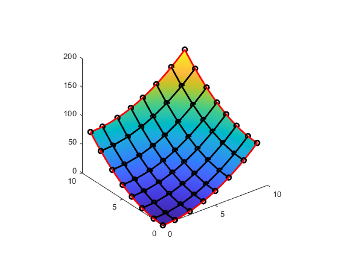
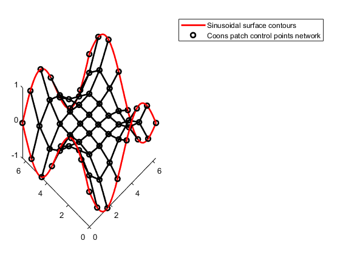

coons_patch
Function to compute the control points of the Coons patch of a given contour defined by four curves, c1, c2, c3, and c4.
Author & support : nicolas.douillet (at) free.fr, 2017-2021.
Contents
Syntax
Coons_patch = coons_patch(c1, c2, c3, c4);
Coons_patch = coons_patch(c1, c2, c3, c4, nbf_u, nbf_v);
Description
Coons_patch = coons_patch(c1, c2, c3, c4) compute the Coons patch of the quadrangle (c1, c2, c3, c4) with nbf_u = nbf_v = 5 (functions) by default.
Coons_patch = coons_patch(c1, c2, c3, c4, nbf_u, nbf_v) uses nbf_u functions in u direction, and nbf_v functions in v direction.
Curves orientation and parameterization
^ v
|
| c3
(1,0) o- - - - - - - - > - - - - - - - -o (1,1)
| |
| |
| |
c2 ^ S ^ c4
| |
| |
| |
o- - - - - - - - > - - - - - - - -o- - - > u
(0,0) c1 (0,1)Connection constraints in X, Y, and Z
c1(1) = c3(1)
c1(end) = c4(1)
c2(1) = c3(end)
c2(end) = c4(end)
See also
Curve fitting toolbox | NURBS toolbox | NURBS |
Input arguments
- c1 : curve #1, alongside u parameter (see accepted formats below)
- c2 : curve #2, alongside v parameter (see accepted formats below)
- c3 : curve #3, alongside u parameter, on the opposite side of c1
- c4 : curve #4, alongside v parameter, on the opposite side of c2
- nbf_u : number of functions / knots in u direction (integer >= 3)
- nbf_v : number of functions / knots in v direction (integer >= 3)
(c1, c2, c3, c4) / cn accepted formats :
| | |
- cn = [X] ... [Y] ... [Z] => size(cn) = [nb_sample, 1, 3] (recommended)
| | |or
| | |
- cn = X Y Z => size(cn) = [nb_sample, 3]
| | |or
-- X --
- cn = -- Y -- => size(cn) = [3, nb_sample]
-- Z --Sampling advice for C1, c2, c3, and c4 : Take a sufficient (>~ 10) samples / number of elements for c1, c2, c3, and c4 vector regarding the numbers nbf_u and nbf_v of functions choosen in u and v direction. Mind also the Shannon Nyquist sampling condition.
Output argument
- Coons_patch : a matrix / array of size [nbf_u, nbf_v, 3] giving the NURBS control points coordinates such that :
X = Coons_patch(:,:,1)
Y = Coons_patch(:,:,2)
Z = Coons_patch(:,:,3)
Example #1 : 3D paraboloid
nb_sample = 64; x_min = 0; x_max = 9; y_min = 0; y_max = 9; c1 = cat(3, cat(3, linspace(x_min,x_max,nb_sample)', y_min*ones(nb_sample,1)), (linspace(x_min,x_max,nb_sample)').^2); c3 = cat(3, cat(3, c1(:,1,1), y_max*ones(nb_sample,1), (y_max*ones(nb_sample,1)).^2 + c1(:,1,3))); c2 = cat(3, cat(3, c1(:,1,2), c1(:,1,1)), c1(:,1,3)); c4 = cat(3, cat(3, c3(:,1,2), c2(:,1,2)), c3(:,1,3)); % Surface S = zeros(nb_sample, nb_sample, 3); [S(:,:,1) S(:,:,2)] = meshgrid(linspace(x_min, x_max, nb_sample), linspace(x_min, x_max, nb_sample)); S(:,:,3) = S(:,:,1).^2 + S(:,:,2).^2; nbf_u = 8; nbf_v = 8; P = coons_patch(c1, c2, c3, c4, nbf_u, nbf_v); figure; % Contour : C1, c2, c3, and c4 curves line(c1(:,1,1),c1(:,1,2),c1(:,1,3), 'Color', [1 0 0], 'Linewidth',2), hold on; line(c2(:,1,1),c2(:,1,2),c2(:,1,3), 'Color', [1 0 0], 'Linewidth',2), hold on; line(c3(:,1,1),c3(:,1,2),c3(:,1,3), 'Color', [1 0 0], 'Linewidth',2), hold on; line(c4(:,1,1),c4(:,1,2),c4(:,1,3), 'Color', [1 0 0], 'Linewidth',2), hold on; % Interpolated -assumed- surface surf(S(:,:,1), S(:,:,2), S(:,:,3)), shading interp, hold on; % Coons patch plot3(P(1:end,1:end,1),P(1:end,1:end,2),P(1:end,1:end,3),'ko','Linewidth',2), hold on; for i = 2:nbf_u-1 plot3(P(i,1:end,1),P(i,1:end,2),P(i,1:end,3),'Color','k','Linewidth',2), hold on; end for j = 2:nbf_v-1 plot3(P(1:end,j,1),P(1:end,j,2),P(1:end,j,3),'Color','k','Linewidth',2), hold on; end axis square; view(3);
Example #2 : sinusoidal surface
nb_sample = 60; x_min = 0; x_max = 2*pi; y_min = 0; y_max = 2*pi; c1 = cat(3, cat(3, linspace(x_min,x_max,nb_sample)', y_min*ones(nb_sample,1)), -sin(linspace(x_min,x_max,nb_sample)')); c3 = cat(3, cat(3, c1(:,1,1), y_max*ones(nb_sample,1), -c1(:,1,3))); c2 = cat(3, cat(3, c1(:,1,2), c1(:,1,1)), -c1(:,1,3)); c4 = cat(3, cat(3, c3(:,1,2), c2(:,1,2)), c1(:,1,3)); nbf_u = 8; nbf_v = 8; P = coons_patch(c1, c2, c3, c4, nbf_u, nbf_v); figure; % Contour : C1, c2, c3, and c4 curves c = cat(1,flipud(c1),c2,c3,flipud(c4)); line(c(:,1,1),c(:,1,2),c(:,1,3), 'Color', [1 0 0], 'Linewidth',2), hold on; % Coons patch plot3(P(1:end,1:end,1),P(1:end,1:end,2),P(1:end,1:end,3),'wo','Linewidth',2), hold on; for i = 2:nbf_u-1 plot3(P(i,1:end,1),P(i,1:end,2),P(i,1:end,3),'Color','w','Linewidth',2), hold on; end for j = 2:nbf_v-1 plot3(P(1:end,j,1),P(1:end,j,2),P(1:end,j,3),'Color','w','Linewidth',2), hold on; end set(gcf,'Color',[0 0 0]), set(gca,'Color',[0 0 0],'XColor',[1 1 1],'YColor',[1 1 1],'ZColor',[1 1 1]); view([-45, 54]); legend('Sinusoidal surface contours','Coons patch control points network', 'TextColor',[1 1 1]);